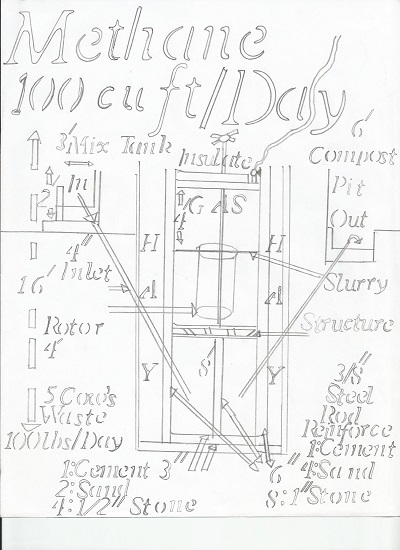
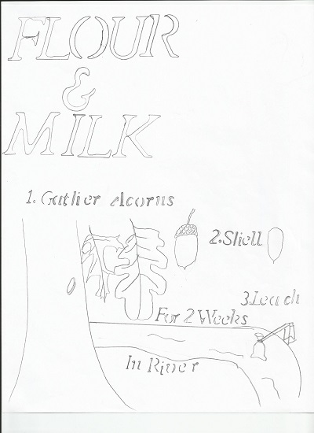
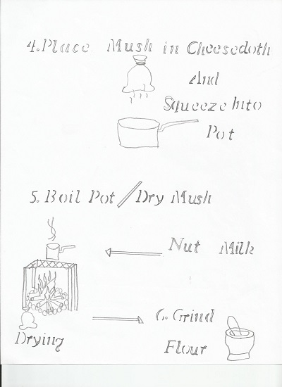
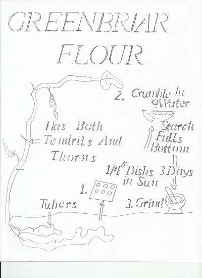
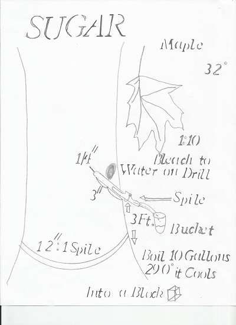
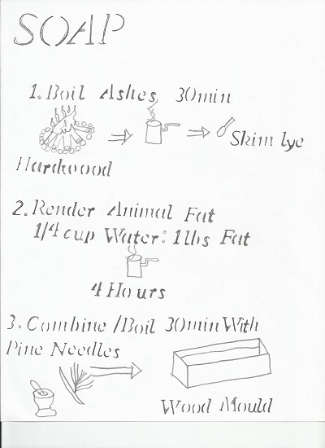
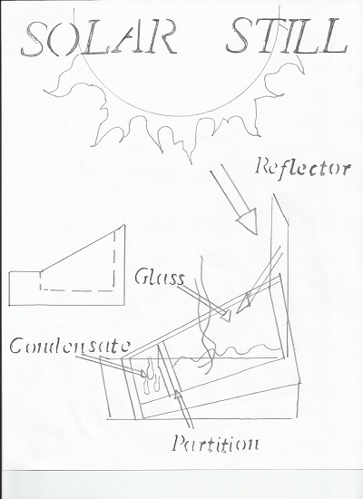
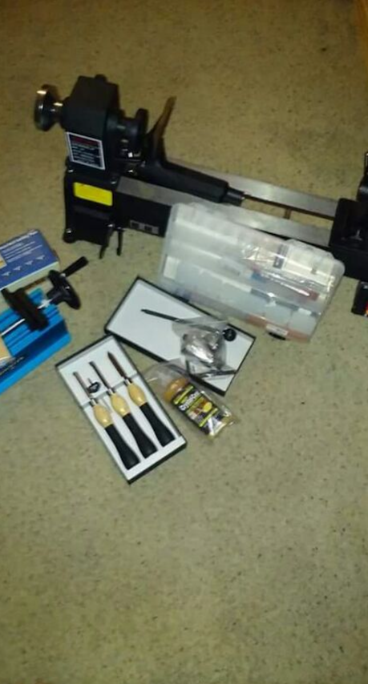
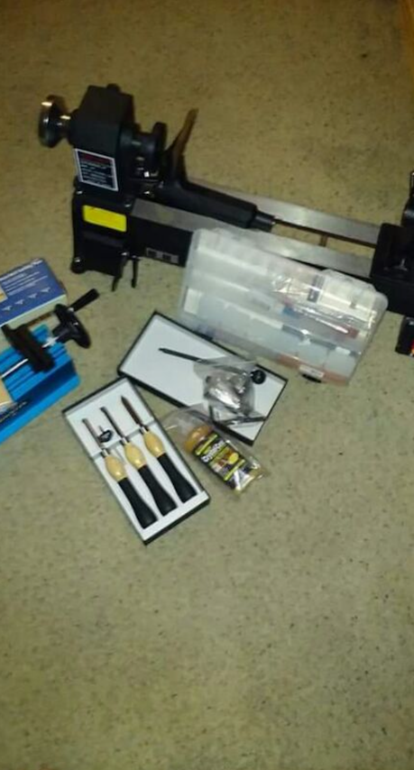

1 / 106

Welcome.
2 / 106

*********************LEGAL DISCLAIMER************************
Nothing can treat nor cure any disease except FDA approved prescriptions.
Consult legally qualified medical personnel always. I am but a humble
"Know nothing" CPHT/EMT (at publication) whom learned IV compounding,
extemporaneous compounding, chemotherapy etc. I am not a MD/PHARMD.
This section of the book is intended for educational purposes only. Do not
attempt to use anything in this book in any manner. ever. Mixing a drug
inappropriately can and has killed, maimed, or otherwise harmed people for
centuries. It takes 8 years of college to become a pharmacist, for reason.
It takes 4 years at university to become an engineer for reason. I am not one.
It takes 8 years to become a chemist at university for reason. I am not one.
All copyrights are maintained for all images and products on this website.
The information provided using this website is only intended to be a general
summary of information to the public. Every effort has been made to ensure
the accuracy and completeness of the information on this web site. However,
I make no warranties, expressed or implied, regarding errors or omissions
and assume no legal liability or responsibility for any injuries resulting
from the use of information contained within. Seek legally qualified
professional, medical, engineeering, or legal advice always; of which I am
not nor is this website. By proceeding with this webste you the student or
reader understand this and agree not to use any of the information presented
in any manner, ever. If you do not agree then close this window and go
elsewhere.
3 / 106

Methane digester's are used to provide a means of natural gas to
heat or cook with.It essentially is a pit wherein cow dung is
placed and through a natural process digests the manure giving
off a gas; methane. The construction of a methane digester
with the accompanying 4 cows (average for an american home
amount of gas usage produced from the digester) can grant the
constructor a lifetime of good.
Mother Earth news article on making a methane digester
Mother Earth news article on making a methane digester
4 / 106

You do not always get to eat wheat if the 'just in time'
Delivery system fails. Most stores only have about 3 days
worth of goods on the shelves. Fortunately for you there
Exists older ways of obtaining flour, and milk. Acorns have
Been utilized for centuries as a good substitute. The trick
is to leech out all the tanins in running water .
Foraging Texas acorn information link
Foraging Texas acorn information link
5 / 106

Preparing the acorns for milk and flour continued.
6 / 106

But what if there is no acorns nor wheat? Fortunately
There are other alternatives. Such like the tuber of
the greenbriar plant. Which grows year round. They are
Easy to identify as they are a vine with both thorns
And curly "tails". The tubers are in the ground of this
beautiful plant.
Foraging texas Greenbriar link
Foraging texas Greenbriar link
7 / 106

How to make Sugar from a maple tree. It is important
that you wait until it freezes outside. Then with a clean
Spile and drill (disinfected so you do not kill the tree)
create your spigot for gathering the sap. For every 12"
you may place one spile up to three spiles for 36" in
circumference.
Foraging texas maple link
Foraging texas maple link
8 / 106

Soap making from hardwood ashes.
Youtube on soap making with wood ash
Youtube on soap making with wood ash
9 / 106

Solar still for the first stage of making potable water
Essentially the sun beats down on the glass. Then
The water begins to evaporate and condensates on the
underside of the glass. The glass is set at an angle
gradient that allows the condensate to slide down across
a partition that collects the water. Boil the condensate
(for microbiological contamination )and filter through
sedimentation (for nuclear and heavy metal contamination
for potable water.
Science direct solar still article
Science direct solar still article
10 / 106

How to filter nuclear fallout out of water. Whether from
A fukushima style event or nominal yield warheads this is
an important step to be familiar with in water purification.
Exposure to nuclear material can result in cancer and death.
OISM water nuclear survival
OISM water nuclear survival
11 / 106

Filtering rain is how the pioneers used to maintain adequate
Water supplies even in drier climates. Be careful. Because
The legality of collecting rain varies from place to place.
Check all local laws before doing anything.
Rain water barrel construction
Illegal to collect rainwater
Rain water barrel construction
Illegal to collect rainwater
12 / 106

Making charcoal is as easy as aquiring a clean metal barrel (without
Oil or any chemicals in the barrel for your own good and safety please)
and cutting the top off and poking a few holes in the bottom (to be able
to place poles to flip over and to place the tinder to start the fire.).
Essentially all you want to do is to cut off the fire to the wood and
allow it to smolder.
Make charcoal
Make charcoal
13 / 106

After setting the wood ablaze for a short time (15 min or so) you cut off
the air Supply (close the vent and bury in sand) and permit it to smolder
upside down.
charcoal wiki
charcoal wiki
14 / 106

Without electricity the weather reigns supreme over life. On the oceans
All manner of devices were created to read and predict the weather before
The advent of the barometer. They were inaccurate quite often. More a wish
than any actual science. The Storm glass was however at least over 50%
accurate. So it does do better than pure guessing. A bit of history.
Storm glass youtube
Storm glass youtube
15 / 106

How to read a storm glass.
16 / 106

The barometer changed weather predicitons drastically. It permitted
The first weather forecasts to become accurate to 90%. A gift truly
For anyone wishing to travel without electricity. Or a farmer. Or
a navigator etc.
Make a barometer
Make a barometer
17 / 106

Perhaps one of the most important things to know in this entire book.
The walipini allows you to grow food 365 days a year. 24 hours a day.
7 days a week. Anywhere in the world. Essentially it is a pit greenhouse.
It does not matter what the surface temperature is on Earth. Because a few
feet down the temperature is maintained at a constant degree. It does not
matter if the temperature is 0 degrees in the dead of winter or 100
degrees in the heat of the summer... a few feet down and it is a constant
50-60 degrees.With a little sunlight the wallipini can be warmed and
additional 10-30 degrees. Making it ideal to grow food. Combined with
vertical aquaponics (wherein you can grow 1,000,000 lbs. of food & 10,000
fish on 3 acres) this is essentially a grocery store for an entire village
all year long potentially. If you have one walipini for food and another for
plant based medicine (pharamcognosy) and a third for hemp (a non
psychoactive cousin of marijuana that was used for many commercial uses
and today over 5,000 industrial uses)... you have the ability to maintain an
entire village indefinetely. Further with C02 leeching the quality of food
out... it will become increasingly important to have all your food growing
in greenhouses to maintain sufficient vitamin levels for the human body as
climate shifts. Otherwise what you do grow will be about as good for your
body as eating cardboard essentially, in time. I cannot emphasize this
enough.... LEARN THIS.
Walipin construction book
Business insider article on food leeching
million pounds of food on 3 acres with vertical aquaponics youtube
Hemp uses infographic
hempcrete (carbon negative concrete made from hemp)
American society of pharmacognosy
Walipin construction book
Business insider article on food leeching
million pounds of food on 3 acres with vertical aquaponics youtube
Hemp uses infographic
hempcrete (carbon negative concrete made from hemp)
American society of pharmacognosy
18 / 106

Venting humidity is important. Alternatively if not in an extremely humid
environment you can place a small fireplace to keep the walipini warm.
The reason you want to control the humidity is to keep bacterium out.
walipini example
walipini example
19 / 106

One overlooked aspect of living without electricty is that
You will have to maintain your own dental care. Without
Trucks to deliver the toothpast or without being able to
scavenge for some more... how do you make it? Here is one
way.
toothpaste
toothpaste
20 / 106

Pemmican is how the native indians of America were able
to keep their food without spoiling on long journeys. It is
an important aspect of being able to travel without dieing.
With the modern day refrigerator few people consider shelf life
of foods purchased so readily from the store. Sans refrigerato
it becomes one of the top priorities of what to do with hunted food.
Few people can eat an entire deer in one sitting. Fewer still would
want to waste the massive amount of salt required to salt their food
continuously.
pemmican
pemmican
21 / 106

Popularized by guerilla activists in south america the dakota
fire is a means of concealing a fire to cook with. Which is a
necessary skill if the world has turned upside down into one
without the rule of law. The smoke from the fire will attract
many other people as it will be able to be smelled from a far
distance. The leaves of a tree help to absorb the smoke in a
dakota fire setup. Further the light at night will atract unwanted
attention at times. The dakota setup minimizes the light.
Dakota fire hole
Dakota fire hole
22 / 106

There are so many varied ways to track animals it is a lost art.
However how will you make buckskin if you cannt find a deer? How
will you breed rabbits if you cannot find a rabbit? etc. These
minor examples are by no means a complete course however it is at
least a beginning to help you understand that it is not impossible.
Track animals from Princeton
Track animals from Princeton
23 / 106

They used to call wheat the "staff of life" precisely because it is.
Bread is an essential part of most people's diets, yet few know how
to make it anymore. It requires yeast. Where do you get yeast from dear
student? Actually you can from the air itself. With a little yeast, water,
and flour you can achieve many baked goods. All those cookies, breads,
tortillas, cakes etc. that you have enjoyed throughout life are not lost
if we lose electricity.
Wild yeast
Wild yeast
24 / 106

To make certain you have at least bread. Here is the process. You
already know how to clean water, and procure flour from acorns or greenbriar
with yeast in conjuction you really can make bread. With sugar from maples
you can make cookies. Add some eggs scavenged or raised from chickens (i
will teach you later in this book) and you really can produce almost any
baked good. "Give a man a fish and he eats for a day ...teach a man to
fish and he eats for life".
Give your starter away. Wild yeast bread.
Give your starter away. Wild yeast bread.
25 / 106

Now to put this delicately, the human body is one big tube for
turning all that delicious food into ...compost. Yes compost.
You need to use every advantage you have when there is no power.
Compost helps plants grow. It occurs from the natural decomposition
of organic living matter. Of which human waste can be mixed at a
1:3 ratio with natural compost after the human waste has been turned
into compost itself.The feces is composted. The urine has another usage.
We will discuss that usage later in the book. For now understand that toilet
paper is a luxury. That however many other countries use a pidet to wash
their posterior with. Essentially in a grid down situation inside the
bathroom you can place a sprayer. Like what you woulld buy to spray
the sidewalk with or to water plants with. There are many ways to dry
your posterior with naturally occuring local plants. This composting
toilet is the only way to keep disease from killing your village without
flowing water and septic tank cleaners etc. The water pipelines will not
function if the electric grid dies. No water? no modern toilets. A
composting toilet is a necessity.
composting toilet
composting toilet
26 / 106

Now we have seen that electricity is required for much. In fact
People do not realize just how much. It actually occurs naturally
even! Takeing a magensium rod and other assorted items can give you
a small "battery" for a time. The only purpose of this battery and why
it is included in the book is to generate hyrogen. Hydrogen is a gas
that you can aquire by splitting water with 1.5 volts of electricity.
The uses of hydrogen are many. However for our purposes, is a "PEM" was
purchased prior to the grid going down, (or alternatively aquired from
a hydrogen fuel cell vehicle) then with hydrogen being sent through one
end and oxygen being sent through the other end you would have a means
to create PURE H20. And ...electricity. Enough to power a fan on your
composting toilet so that it did not stink to high heaven every time
you walked into it.
Stephen dickens water battery
PEM explained ballard
How to make hydrogen
Stephen dickens water battery
PEM explained ballard
How to make hydrogen
27 / 106

Now while a PEM can move a small fan, there is no way you will
generate enough electricity with a trickle of hydrogen, to move a
pump required to cool down a refrigerator or AC unit. So how will you
keep all your food stored without turning it into pemmican? simple.
For centuries in nigeria and the west coast of africa people have
used a zeer pot to maintain a cooling eefect. Two clay pots and sand.
Add some cool water and place into a windy place (such like the doorways
of your walipini.... conveninet huh? See how the knowledge builds on
itself?). This will give you a refrigerator without electricity permanently
if done correctly. This is the secondary reason you want to control humidity
inside a walipini.
pot in pot (zeer pot) youtube
pot in pot (zeer pot) youtube
28 / 106

Inside a walipini the humidity affects the temperature. Use vents to
control the humidity and thus the temperature. The target is to have
a zeer pot with an inside temperature in the low 40's. Yet maintain the
walipini at 60's. Hence you want no more than 20% humidity at any given
time.
Controlling humidity in a greenhouse UMASS
Controlling humidity in a greenhouse UMASS
29 / 106

Have you actually ever cleaned a chicken in your entire life?
Most people whom eat meat have never actually been a butcher.
If your going to have eggs and chicken or that thanksgiving turkey
You need to understand how to clean a bird. A standard road cone
can work for your needs cut to size of course. Although in the long
run it will be better for your village to find some sheet metal
because of a cleaning factor. Whatever you use make sure you keep
everything clean.
Butcher a chicken
Butcher a chicken
30 / 106

Pretty self explanatory here. Make sure you don't cut yourself.
31 / 106

Again self explanatory steps.
32 / 106

Do not eat a contaminated bird. This is rare to find however
It is better to go hungry than to eat bad meat and end up sick.
Chicken diseases
Chicken diseases
33 / 106

Since we are butchering chickens here... this is how
to butcher a larger animal such like a cow. Make certain
you do not cut into araes that can contain CJD.Knowing the
approximate amount of meat from the animal also helps you
determine if it is sufficient for harvest for the village
or not. For every 100 lbs. there are on average 43 edible
lbs. of meat. Various parts are used for various cuts of
meat.
Butcher a deer
FAO butcher guidelines
Butcher a deer
FAO butcher guidelines
34 / 106

Perhaps one of the most important large game to butcher ....
the deer. Its meat is delicious and tender and its skin is
used in many applications for textiles. Its sinew can be used
for arrow fletchering. Its brain can be used to soften the skins
all in all the animal is a great large animal to butcher and raise
precisely because it is prolific breeder and is easy enough to hunt.
Do not kill young bucks. Nor kill does. Kill the deer that has several
points to its antlers (its older thus and ready). Use every part of
the animal and thank G-d for its gift of sustenance to you and yours.
Use the entire deer
Use the entire deer
35 / 106

Remember you can make pemmican to preserve meat.
36 / 106

Eventually your clothes will wear out. Especially if you are
on the move. You will not be able to carry an entire wardrobe.
So with some forethought it would do you well to purchase some
long lasting clothes. However even those tough boots will wear
out eventually. Then what? Being able to make some out of buckskin
is an essential tool in a world without electricity. Here are
the very basic patterns. After you have brain tanned it.
(next page.)
Hide tanning the cree way
Hide tanning the cree way
37 / 106

Preparing a skin to make clothing is not as simple as cutting
it off the deer and wearing it. You need to treat it to make it supple.
The video on the previous page does a very good job in illustrating
that.
38 / 106

How do you make a cup? A frying pan? The answer is that you
need to know how to melt metal and pour it into a sand mould.
In order to do that you need to know alot of things. Metal casting
is quite literally a lost art but is a requirement of the modern
civillization that surrounds most people in a 1st world country.
Without sand casting you cannot have modern civillization precisely
because in order to make a power plant you must know how to make a
metal drum. Or a condensation metal tube. or... ad nauseum. Below are
the lost formularies of the constituent base materials needed to use this
skill. It is an art and a skill that few mastered. Today most castings
are done by highly complex machinery. However it is possibleto do it
by hand. Greensand can be used many times over for low heat castings
such like aluminum or brass. They require a lower heat to cast with.
Iron requires a petro bonded sand because it requires such a high heat
to work with. Core making is creating a hard sand that makes a void such
like in a casting of a cup. The negative space is made up by a "core".
Clay crucibles are used once. Graphite crucibles c an be used a few times
to cast with. You need a furnace mortar mix to make the furnance immune
to all the flames so that the heat is swirling around the crucible heating
it and melting the metal within the crucible and not the furnace itself.
A real master of the craft. Part 1 of 67 videos
A real master of the craft. Part 1 of 67 videos
39 / 106

Photo of my home made furnace.
40 / 106

My completed foundry.
41 / 106

Sodium silicate is used as the binder that glues cores together
But how do you make it? In a reflection furnace. Here are the base
ingredients.
Sodium Silicate
Dry method furnace
Myfordboy CO2 cores
Sodium Silicate
Dry method furnace
Myfordboy CO2 cores
42 / 106

Lye has a multitude of uses such like soap etc. For a foundry
it is needed to make the sodium silicate mentioned on the previous
page. Since I mention the usage of a chemical I show how to acquire
it from the base source. I will do this throughout the book.
Make Lye Mother Earth News
Make wood ash lye
Make Lye Mother Earth News
Make wood ash lye
43 / 106

I mentioned baking soda two pages back. This is how it is made.
Leblanc process for baking soda
Leblanc process for baking soda
44 / 106

More base commodities and how to acquire them. I mentioned you
would be saving your urine for something else on the composting
toilet page. Here is its usage. These commodities are required
in one form or another to produce modern metal castings.
The stuff you need to make the baking soda....Here:Sulfuric acid
Make saltpeter from urine gov archive
Make Salt
Make washing soda
homemade body powder AKA talcum powder
The stuff you need to make the baking soda....Here:Sulfuric acid
Make saltpeter from urine gov archive
Make Salt
Make washing soda
homemade body powder AKA talcum powder
45 / 106

Cornstarch is needed to make talcum powder mentioned on the
previous page. The linseed oil can be used to make cores as well.
how cornstarch is made
Linseed oil
how cornstarch is made
Linseed oil
46 / 106

Solvite is for core making. Vinegar can be used to harden. graphite
is used to make graphite crucibles. Which last considerably longer about
5 melts give or take.
solvite (core making agent) aka wall paper paste
Vinegar
graphite production
Graphite crucible
solvite (core making agent) aka wall paper paste
Vinegar
graphite production
Graphite crucible
47 / 106

Fire clay is useful for single melt crucibles. It can also be
ground back down after making a crucible and reused. Viking steel
was legendary. For reason. The process was a closely guarded secret
for centuries. However it is easily enough done today.
Fire clay
viking steel
Fire clay
viking steel
48 / 106

The steps needed to make a clay cruicble. Bronze is good for a
Few different uses. Medical and dental spring to mind. As to
Aluminum the easiest way to source aluminum is from objects
already cast from aluminum. Such like ladders or engine parts
however caution is needed if you are unsure. Magnesium is very
dangerous and needs to be ruled out as a part of any metal found
that you want to cast with PRIOR to melting it. Vinegar mentioned
2 pages back can help identify the presence of magnesium.
Clay crucible
Bronze alloy percentages can vary
Myfordboy test suitablity of metal
Clay crucible
Bronze alloy percentages can vary
Myfordboy test suitablity of metal

50 / 106

A lime kiln was essential once upon a time for crops
There was no other way to adjust the PH of then soil.
Quicklime kilns dotted the coasts of many european countries
for centuries as a requisit of life itself. Without modern
refineries and chemical plants you will need to make your own
kiln. It also holds the secret to a type of cement used by the
Romans that has withstood the test of time.
Lime kiln youtube
Lime kiln wiki
Lime kiln youtube
Lime kiln wiki
51 / 106

In order to use a foundry furnace we need to have a pipe
that feeds oil into that is set aflame into the furnace.
that pipe needs to be shaped and attached to the furnace
through a hole in the side. I chose to use a waste oil burner
because you can source oil from hemp grown continuously. Or
even in the modern era you can use the oil gathered from the
grease traps of various restaurants for free sometimes.
Waste oil burner youtube
Artfulbodger waste oil burner
Myfordboy waste oil burner build
Waste oil burner youtube
Artfulbodger waste oil burner
Myfordboy waste oil burner build
52 / 106

Essentially all you need is a pipe insert into the furnace and
a oil holder such like a drip pan for a car elevated so that it flows
down a tube to a control valve that controls how much oil drips down.
At the other end of the pipe we have a hair dryer to blow the oil forward
towards the furnace wherein it is lit and thus the flame circles around
the crucible. Without electricity the option is to use a pair of bellows
constantly.
Instructables waste oil burner foundry
Instructables waste oil burner foundry
53 / 106

Now that we understand the flow of the oil into the furnace and
we also understand how to build a furnace and how to make the required
commodities to use in a casting... how exactly do we cast a metal object?
Here are the required steps in order. A casting is essentially a copy of
any object turned into metal. Withut objects you can alwasy carve the item
out of wood first and cut the item in half. This is called a mould. The cope
and drag are simply boards joined together to form a square large enough
to hold the mould in. one square for each half of your mould.
Myfordboy cast at home part 1 no core
Myfordboy cast with a core (negative space)
Myfordboy cast at home part 1 no core
Myfordboy cast with a core (negative space)
54 / 106

The steps continued. Congratulations. You can now make any tool you need.
In a world without electrcity and no convenient stores open with which to
to purchase tools...this truly is the way in which you will be able to make
an ax, a saw, a wrench, a plate, a cup, a hammer, nails, etc. It is amazing
to me how few people have learned to cast metal when it is required to have
anything of construction or usage for a home.
FAQ's from myfordboy
FAQ's from myfordboy
55 / 106

One of the first things after you have settled in to your home to cast
Is a way to determine earthquakes. Why? Because should the precipitating
factor of the electric grid being taken away be due to Nuclear war....the
tectonic after effects will be spectacular. You already have a means to
determine weather and forecast however you still need to be able to tell
when the shaking will stop. Even if non nuclear means are used to dismantle
the grid you will still need an earthquake detector to determine if there are
secondary explosions occuring from such like powerplants or nuclear facilities
nearby. The chinese made a very simple and genius way of determining that.
First seismometer
First seismometer
56 / 106

Assuming you survived the chaos and your family are doing somehwat ok,
You are going to want to be able to write down what you have learned and
know in order to pass along the knowledge to any children. The written word
is EMP proof. In fact dear reader, it would behoove you to print out this book.
But how do you make ink? Do not worry. Here it is.
Pen ink
Pen ink
57 / 106

Unless you live in the desert in arabia your not getting gum arabic anytime
soon. In the world war people would make their own dextrine as a substitute.
here is that recipe. I already previously showed you how to make corn starch.
Dextrine
Gum Arabic
Dextrine
Gum Arabic
58 / 106

Now thats all fine and dandy for writing a single letter or a note or some such.
But what if you would like to print off copies of this book to give to many?
for that you need printer ink. The next several pages are dedicated to that
and its constituent parts. You need an offset letterpress (essentially a big
weight box dropped upon a page or a roller drum that feeds clean paper over
a set of pre carved ((backwards)) letters and prints them to a page.) and
this style of ink. Or this ink and some wooden stamps carved out and cast
((with the letters backwards upon the board)) into metal and smoothed.
Make plaster of paris
Tempera paint
Make plaster of paris
Tempera paint
59 / 106

60 / 106

Turpentine was actually used once to run motrocycles with during the war.
when extracting the fatwood apply indirect heat not direct flame.
Pine tar
turpentine
Pine tar
turpentine
61 / 106

Now that you have the means to make ink and are on your way to being a
Proficient inkier... you still need paper. Again ...HEMP is your best friend
it truly can turn the tide in your favor in countless ways without electrcity.
I personally would have an entire walipini dedicated to its production in a
world wherein we lost the grid.
Hemp paper
Hempcrete
Hemp textiles
Hemp plastics
Hemp oil
Hemp production
Hemp vitamins, minerals, amino acids etc.
Cooking with Hemp from bon apetit
Hemp paper
Hempcrete
Hemp textiles
Hemp plastics
Hemp oil
Hemp production
Hemp vitamins, minerals, amino acids etc.
Cooking with Hemp from bon apetit
62 / 106

In your paper production you as a consequence will have also simultaneously
given your village flour and oil sufficient. Attaching a windmill to turn the
press would also make harvesting much easier.
Hemp wiki
Hemp wiki
63 / 106

Grinding the seed paste with a quern to make the flour. Waste not. want not.
Make your own Quern
Make your own Quern
64 / 106

The other part of the plant is the bast fibers....these are used in a hollander
beater to make paper with. The lye you already learned how to make in the
foundry section.
Hollander beater
Hollander beater
65 / 106

Without bleach your paper will be green or dark amber. You need to whiten
The paper for most uses. To get the 12 volts of electrcity you can use the
hydrogen PEM mentioned earlier or alternatively there will be other ways
that this can be accomplished spoken of later in the book.
Make Bleach
Make Bleach
66 / 106

After the beater turns the fibers into long strings, you can pull them out
with a simple deckle and mould. a window screen can serve well in this
regard.Press drying (a car jack and boards work well) and finally cutting
the paper to size.
Make paper
Make paper
67 / 106

What else can you get from cleaning a bird? Quills. In terms to write
With it is no substitute for a true pen however in a pinch it can work.
It is prefereable to the stylus used by the babylonians and egyptians to
write in the clay baked tablets however, not by much.
Make a quill pen
Make a quill pen
68 / 106

Quill instructions continued.
69 / 106

Now that you can write a book or print one off How exactly do you
Bind such a work together?Here are some excellent instructions from
a gifted artist in making a leather bound journal. You already know
how to make leather. Everything you need to give a copy of this book
is within this book. From scratch. The book is intended to be self
perpetuating so that the knowledge may become widespread and help
the re-establishment of modern civillization, from the darkness.
Consider carefully whom you give a copy to. Let them agree to make
a copy to spread the knowledge. If but one copy survives then,
humanity stands a chance at a second chance.
Make a leather Journal
Bookbinding
Make a leather Journal
Bookbinding
70 / 106

Journal construction instructions continued.
71 / 106

READ THY BOOK...memorize it. The safest place for knowledge that
Cannot be taken from you is in your mind. Books can be lost, Minds
are much harder to lose. This book can help you keep your whits about
you throughout perilous times. It is indeed a great gift I give you
dear student.
72 / 106

Speaking of not losing your mind... have you ever gone a summer
with no air conditioning? Slept sweating? Learn how to make ice.
Do not worry the instructions to make the chemicals are on the next
page. Basically the heat around the pipe is pulled away due to a chemical
process. Any water around the pipe will freeze. So extend the pipe to a
coil in a box away from the mirror portion. Pour water in the box.
That is not pictured because to do that I would apparently have to have
a professional HVAC liscence which I do not. Nor do I feel like going
back to school for years to draw a box. The work is taken from the
San jose university.
Solar ice maker
Solar ice maker
73 / 106

Calcium chloride and ammonia needed for the solar ice maker.
I already showed previously how to make the sulfuric acid and
hydrogen. The history of production showed a glimpse of how to
obtain the needed chemcials in an older fashion. Extreme caution
should be utilized when working with chemicals. Failure to follow
established safety procedures can result in injury or death. This
book is only for educational purposes and is not intended to be
professional advice. Seek legally qualified professional advice
always.
Calcium chloride
Ammonia
Calcium chloride
Ammonia
74 / 106

Ethanol to make the urea, and a fresnel lens to heat the pipe.
The fresnel lens is deceptively powerful. A large enough one can melt
metal by itself, let alone human flesh. Be careful.
Make ethanol
Make Urea with ethanol
Make a fresnel lens
Make ethanol
Make Urea with ethanol
Make a fresnel lens
75 / 106

How to cast glass for the fresnel lens.
Various glass formulas
Make glass from sand
cut glass with hot and cold water
Various glass formulas
Make glass from sand
cut glass with hot and cold water
76 / 106

Now that we can cast glass and make an aquarium thus, and we know how
to manage with some metal casting, the next important thing to do is to
ramp up our food production. You can grow 1,000,000 lbs. of food and
10,000 fish on 3 acres. Yes THREE ACRES. with a style of food crop
production known as aquaponics. In simplistic terms the fish (normally
tilapia) feed the plants and the plants feed the fish in an infinite
loop. Growing vertically the fish poop feeds the filter plants (duckweed
usually) at the top tray. Then the water descends and feeds the second
tray gathering nutrients from the plant roots. Eventually dropping back
down into the aquarium wherein a simple pump lifts the water back to the
top. Ad infinitum. You can place two aquaponics gardens in each walipini
with the given dimensions of the walipini alresdy measured out for you.
Essentially turning each wallipini into three wallipinis. You want a
curved fish tank bottom to accomodate the run off. Lifting the water
can be done with electricity or it can be done with a water ram effect
that I will show you later. Take heed. I am not a liscened electrician.
Consult legally qualified professional advice always.
MILLION pounds of food on 3 acres
Fish to water ratios
Aquaponic rules of thumb
MILLION pounds of food on 3 acres
Fish to water ratios
Aquaponic rules of thumb
77 / 106

The filter plants watercress, and duckweed, measured out. As well as
some suggestions for planting consideration. Pharmacognosy is the study
of plant based medicinal derivatives. Vis a vis. White willow bark is
the predecessor to aspirin. Hemp obviously is for paper oil and flour.
etc.
Duckweed for fish food
Duckweed for fish food

79 / 106

Once you have the rooted plants ready to transplant to soil or
alternatively continue to grow them to maturity in the trays, you will
need to know how to maintain the PH of the soil. The quicklime kiln can
help that was discussed earlier. But how do you check the PH? here:
Check soil PH with vinegar
Check soil PH with vinegar
80 / 106

Moving water is a laborious task. However it needs to be done to
maintain adequate airation in the vertical aquaponics system. A
backup to a solar powered pump is a manual pump. However you will
get tired of pumping all day. Perhaps rigging a paddlewheel to
prime the pump may help. I will show a water ram pump. Which uses
gravity instead. I am just demonstrating different backups because
your wallipini vertical aquaponics means your villages survival.
Manual water Pump
Manual water Pump
81 / 106

with a plentiful harvest you will tire of pemmican. But how do you
extend the shelf life of grown food? Solar dehydration is a good
option to have in a non electric world. Essentially the moisture in
the food is pulled out and thus preserves the food a little longer.
Solar dehydrator
Solar dehydrator
82 / 106

The fish will need luke warm water to survive optimally. How will
you accomplish that? Burn firewood to boil water all winter? Sounds
laborious. Why not let the sun do the work for you? Here:
Solar water heater
Solar water heater
83 / 106

As any farmer can tell you with a harvest comes rats. Especially
in a world that has lost electricity. You will soon run out of mouse
spring traps. How will you lure the animal to a better trap without
cheese? It is good to know how to make cheese then. Rats also breed
pestilence. Be warned.
Make cheese
Make cheese
84 / 106

This is how you build a mousetrap that does not wear out. Nor does it
kill. Your wallipini should do just fine with a few of these near the doors.
Sorry mice we need to not have the plague...mousetrap
Sorry mice we need to not have the plague...mousetrap

86 / 106

At long last. The water ram pump. A gift from on high. Listen
carefully here. This will move the water to the top tray for as long
as you have "brass swing check valves". I have given you the formula
to brass and taught you how to cast metal. You can make a swing check
valve that can last for a time. It needs to be brass. Other metals can
poison the water much like the romans (and thus kill your fish and thus
kill your crop). I highly suggest you purchase a few prior to any grid
event. They do wear out. Replacing them is easy enough.
Water Ram Pump
Water Ram Pump
87 / 106

Now gentlemen. In a time now long lost, it was normally the man whom
would go hunt for food in the wild due to the intrinsic physicality of
the hunt. Women would tend the gardens due to the intrinsic nature of
pregnancy and safety. To grow your village you will need women. Simple.
This is in no way intended to be viewed as sexist. Simply a historical
perspective. If history repeats then things will return to that life or
people will not survive long. Now, If your really a "man" then you should
care about how your women are tended to. As such I found articles to help
feminine needs. For the record I did work as an EMT for many years and
delivered children myself. I walk the walk in this regard. With that
said "how to make feminine pads and sugar waxing". Because nair and
tampons will not be available again within their lifetimes if the grid
goes down and many women themselves have no idea how to sew together
a pad or make body wax.
Sugar waxing
Make your own pads
Sugar waxing
Make your own pads
88 / 106

Eventually you will tire of hunting wild game and wild chickens,
or turkeys and will want to raise your own. But how do you build a
chicken coop? What do chickens eat? With the addition of a coop you
can enjoy the full range of meats fish and vegetables. Here:
Build your own chicken coop
Build your own chicken coop
89 / 106

The reason you will not want to waste precious firewood on heating
water for the fish tank is because you will need so much of it to survive
the coming winter. It takes 6 MONTHS to properly dry firewood to use it.
What is the best kind to get? How do you store it? How much do you need?
here you go dear student:
Solar firewood drying
Heat values of different firewoods
Solar firewood drying
Heat values of different firewoods
90 / 106

Marking the passage of time is crucial. It permits you to know when
to plant and when to harvest. on a smaller scale a timepiece can help
you ascertain peoples vital signs to determine if they are sick. It can
help you time a cake or perhaps know when to stop writing or reading and
go back to work. etc.But how do you make a timepiece? Fortunately for
centuries people had a means of measuring time in a sandglass.
sandglass
sandglass
91 / 106

Dependent upon the zone your in will dictate the time of planting of
various plants. Once your sprouts have rooted inside your walipini When
do you transplant them? Here are two zones for spring and fall for some
common garden plants.
Denver planting schedule
Houston planting Schedule
Denver planting schedule
Houston planting Schedule


94 / 106

Now how do you make a second crop? What parts of the plant do you need
to replant? How do you save seeds? Never use GMO seeds. They will not
yield a second planting normally. There are entire libraries dedicated
To this topic. Literally. So just some extreme basics...
University of minnesota
University of minnesota

96 / 106

saving seeds continued again. You now know how to save the seeds
of the most common garden plants. Congratulations.
seed saving handbook
seed saving handbook
97 / 106

How much does a family of four eat? How much do you need to store
For the winter? How much do you need to grow succesfully?
Saving vegetables for winter
Plan a garden to feed a family
Saving vegetables for winter
Plan a garden to feed a family
98 / 106

Now we have made mention of using hydrogen to power a battery via PEM
But is there an alternative, now that we know a great deal more? Yes.
Actually thousands of years ago to do electro plating of precious metal
to funerary masks Ancient culture created the "baghdad battery". If you
can grow some citrus trees you will have plenty of power for a time for
personal use. Or at the very least you will have a way to get some hydrogen
and if you can gather a PEM ...pure H20 then.
Baghdad battery build youtube
Baghdad battery build youtube
99 / 106

To get the power back on to more than just yourself you will need a
Power plant. That is actually not as difficult as you would think to do.
In one episode of "cosmos" Neil de grasse tyson laments that if you could
go back in time to a period to start the energy revolution again (this time
properly, meaning without oil and gas, less pollution) Then this would be how
you would want to do it. A solar concentrator farm essentially.
Cosmos a spacetime odyssey episode 12 wiki
Fastforward to 25:40 for the reference
Cosmos a spacetime odyssey episode 12 wiki
Fastforward to 25:40 for the reference
100 / 106

Very simply put a steam turbine is essentially a big metal disk that is
turned by steam hitting partitions on the disk. It is cast the same as any
other metal casting so it is within reach of the normal casting. The bigger
the rotor that turns the more energy that will be eventually output. Or use
alternatively several turbines working in concert.
Steam turbine wiki
Steam turbine wiki
101 / 106

As the turbine spins WHAT it spins is essentially a bunch of copper wire in a
circle. Spinning copper wire creates a magnetic field and outputs electricity.
The steam that turned the rotor that turned the generator is output to a third
unit called the condenser. Wherein it is turned back to liquid.
How a turbine generator works
How a turbine generator works
102 / 106

A condenser is essentially a bunch of pipes that have cold water running
through them, wherein the steam flows over the pipes. After hitting
sufficient pipe turns the steam coalesces back to water and is sent
back to the pipe that is being heated with the fresnel lens. That pipe
generates the steam that begins the process all over again. Does this mean
Your village can have electrcity again? No. It means the power plant is
simple enough to construct but it takes much knowledge to distribute that
electricity to the village via step down units, transformers power lines etc.
All those will need to be replaced in case of EMP too, however that is far
beyond the scope of this book. Simply put, electrical engineers will be
needed post EMP to get the power back on. If none are available Then raid
a university bookstore for all the necessary books for a degree in Electrical
engineering and learn.
Surface condenser wiki
Surface condenser wiki
103 / 106

Pharmacognosy is the study of plant based medicines. For legal purposes
*********************LEGAL DISCLAIMER************************
Nothing can treat nor cure any disease except FDA approved prescriptions.
Consult legally qualified medical personnel always. I am but a humble
Know nothing pharmacy technician whom learned sterile compounding,
extemporaneous compounding, chemotherapy etc. I am not a MD/PHARMD.
This section of the book is intended for educational purposes only. Do not
attempt to use anything in this book in any manner. ever. Mixing a drug
inappropriately can and has killed, maimed, or otherwise harmed people for
centuries. It takes 8 years of college to become a pharmacist, for reason.
All copyrights are maintained for all images and products on this website.
The information provided using this website is only intended to be a general
summary of information to the public. Every effort has been made to ensure
the accuracy and completeness of the information on this web site. However,
I make no warranties, expressed or implied, regarding errors or omissions
and assume no legal liability or responsibility for any injuries resulting
from the use of information contained within. Seek legally qualified
professional, medical, engineeering, or legal advice always; of which I am
not nor is this website.
King's American dispensatory 1898
American society of pharmacognosy
Foraging Texas (author of The complete idiot's guide to foraging)
King's American dispensatory 1898
American society of pharmacognosy
Foraging Texas (author of The complete idiot's guide to foraging)
104 / 106

*see legal disclaimer
Betony for antihemmoraghics. Essentially an antihemmoraghic is used to stop
Bleeding. If you lose too much blood you will possibly go into shock and die.
A bandage that helps staunch bleeding is essential then at times of accident.
Accidents are more prone to happen in a world without electricity due to
much having been destroyed intrinsically or due to violence from others.
In times now lost, people used to say "sell your cloak and buy betony"!
It was considered essential for survival beyond even that which covered
you from the snow.
Betony
wood betony in a NIH study from 2013 for uterine bleeding
Betony
wood betony in a NIH study from 2013 for uterine bleeding
105 / 106

*see legal disclaimer
After you stop bleeding on a patient whether with pressure or bandaging the
Next concern is infection. But how do you make "antiseptic" when there is no
store to go buy some? The lobolly pine tree taken internally can cause a
miscarriage. An external wash is apropos to avoid infection in extreme cases.
Pine
pine needles in an antimicrobial NIH study from 2012
Pine
pine needles in an antimicrobial NIH study from 2012
106 / 106

*see legal disclaimer
After bandaging and cleaning there will be pain to deal with. AFTER the
bleeding has stopped and the wound is healing you can consider aspirin.
Aspirin thins the blood and can cause more extensive bleeding. So as a
pain management it is only apropos for people without bleeding whether
internally or externally and also only when no other contraindications
are present such like age or polypharmacy (using other drugs that would
have a synergistic effect). Bear n mind that this is not true aspirin
and prolonged usage can cause stomach bleeding. Always take with food.
Be very careful of the dosage because you can toxify a liver if you take
too much aspirin in a day(beyond 2000mg if memory serves). Collect the
Inner cambium layer of the tree bark to use.
Willow
how to make willow bark aspirin youtube
Willow
how to make willow bark aspirin youtube


 
